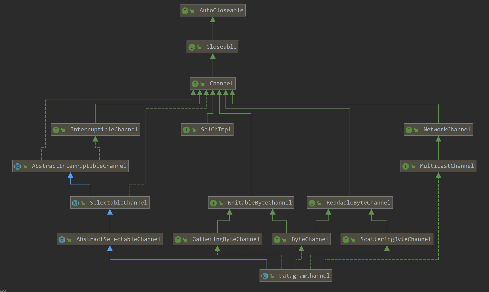
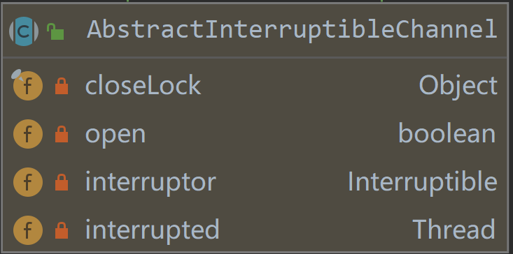
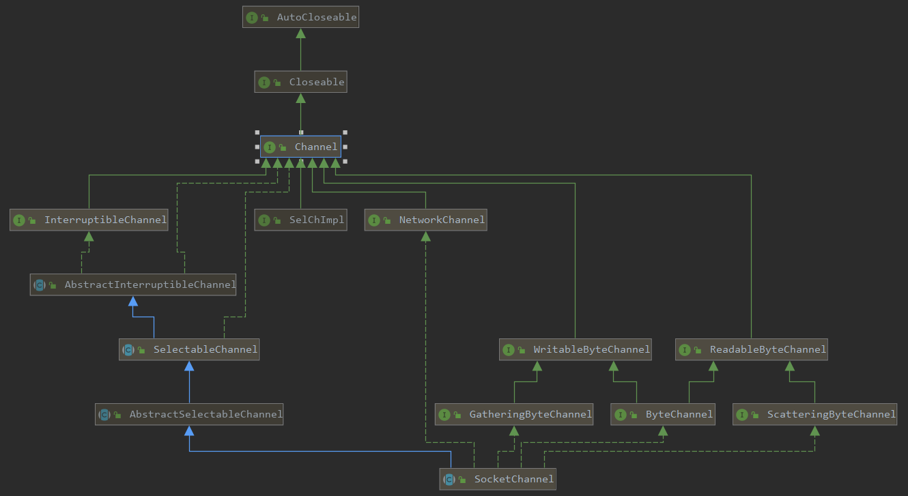
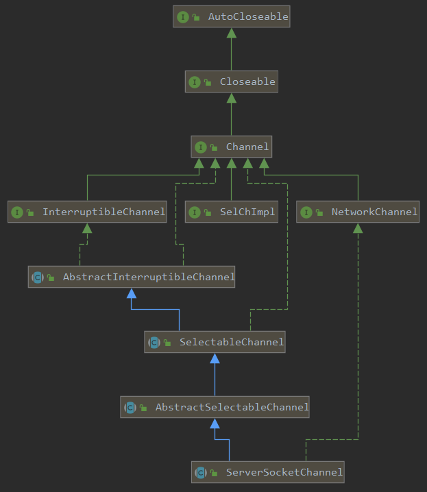
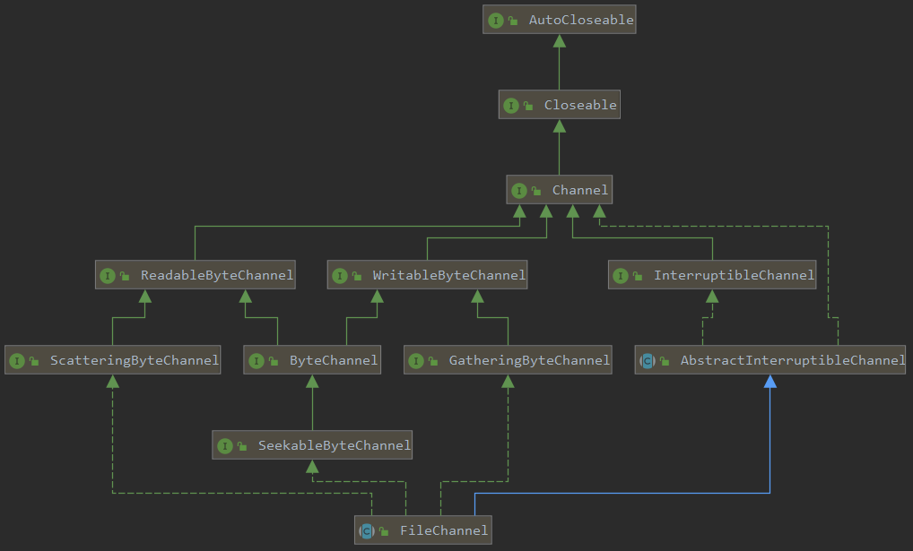

原文连接:https://www.cnblogs.com/Jack-Blog/p/12040082.html
NIO-Channel接口分析
目录
NIO-概览
NIO-Buffer
NIO-Channel
NIO-Channel接口分析
NIO-SocketChannel源码分析
NIO-FileChannel源码分析
前言
本来是想学习Netty的，但是Netty是一个NIO框架，因此在学习netty之前，还是先梳理一下NIO的知识。通过剖析源码理解NIO的设计原理。
本系列文章针对的是JDK1.8.0.161的源码。
上一篇介绍了Channel的基本使用，下面对Channel的接口进行分析。
接口
SCTP协议
SCTP(Stream Control Transmission Protocol)是一种传输协议，在TCP/IP协议栈中所处的位置和TCP、UDP类似，兼有TCP/UDP两者特征。
对于SCTP协议这里不详细描述，想了解的同学可以看下这篇文章
SCTP协议平时用的不多，这里不做具体讨论。
UDP协议
NIO使用DatagrmChannel实现了UDP协议的网络通讯。

下面我们对各个接口进行分析。
AutoCloseable和Closeable分别是自动关闭和主动关闭接口。当资源(如句柄或文件等)需要释放时，则需要调用close方法释放资源。
public interface AutoCloseable {
void close() throws Exception;
}
public interface Closeable extends AutoCloseable {
void close() throws IOException;
}Channel是通道接口，针对于I/O相关的操作，需要打开和关闭操作。
public interface Channel extends Closeable {
boolean isOpen();
void close() throws IOException;
}InterruptibleChannel是支持异步关闭和中断的通道接口。为了支持Thead的interrupt模型，当线程中断时，可以执行中断处理对象的回调，从而关闭释放Channel。
public interface InterruptibleChannel extends Channel {
void close() throws IOException;
}关于InterruptibleChannel可中断I/O详细解析可以看一下《JDK源码阅读-InterruptibleChannel与可中断IO》
Interruptible是线程中断接口，即上面提的Thead的interrupt模型。当线程中断时，则会调用中断操作。
public abstract interface Interruptible {
public abstract void interrupt(java.lang.Thread t);
}
public class Thread implements Runnable {
...
public void interrupt() {
if (this != Thread.currentThread())
checkAccess();
synchronized (blockerLock) {
Interruptible b = blocker;
if (b != null) {
interrupt0(); // Just to set the interrupt flag
b.interrupt(this);
return;
}
}
interrupt0();
}
...
}AbstractInterruptibleChannel实现了Channel和InterruptibleChannel接口。

closeLock是关闭时的锁open表示channle是否打开interuptor为Interruptible中断回调interrupted为I/O执行时的线程
public abstract class AbstractInterruptibleChannel implements Channel, InterruptibleChannel {
...
public final void close() throws IOException {
synchronized(this.closeLock) {
if (this.open) {
this.open = false;
this.implCloseChannel();
}
}
}
//具体的Channel实现关闭
protected abstract void implCloseChannel() throws IOException;
protected final void begin() {
if (this.interruptor == null) {
this.interruptor = new Interruptible() {
//线程中断时，则会调用该接口关闭Channel
public void interrupt(Thread target) {
synchronized(AbstractInterruptibleChannel.this.closeLock) {
if (AbstractInterruptibleChannel.this.open) {
AbstractInterruptibleChannel.this.open = false;
AbstractInterruptibleChannel.this.interrupted = target;
try {
AbstractInterruptibleChannel.this.implCloseChannel();
} catch (IOException x) {
}
}
}
}
};
}
//将线程的blockOn设置为当前interruptor，从而使得线程关闭时能关闭channel
blockedOn(this.interruptor);
Thread me = Thread.currentThread();
if (me.isInterrupted()) {
this.interruptor.interrupt(me);
}
}
protected final void end(boolean completed)
throws AsynchronousCloseException
{
//I/O结束，清除线程blocker
blockedOn(null);
Thread interrupted = this.interrupted;
if (interrupted != null && interrupted == Thread.currentThread()) {
interrupted = null;
throw new ClosedByInterruptException();
}
if (!completed && !open)
throw new AsynchronousCloseException();
}
static void blockedOn(Interruptible intr) {
SharedSecrets.getJavaLangAccess().blockedOn(Thread.currentThread(), intr);
}
}
AbstractInterruptibleChannel添加了begin和end方法。 在I/O操作开始时会调用begin,在I/O操作结束时会调用end。在begin方法内将中断操作加入到当前线程中。最终会调用到线程的blockOn方法，它会将该中断接口注入到线程中，使得线程中断时可以调用到Channel并释放相关资源。
public void blockedOn(Thread t, Interruptible b) {
t.blockedOn(b);
}SelectableChannel接口声明了Channel是可以被选择的，在Windows平台通过WindowsSelectorImpl实现，Linux通过EPollSelectorImpl实现。此外还有KQueue等实现，关于Selector具体细节在《NIO-Selector》一文中会介绍。
AbstractSelectableChannel实现了SelectableChannel接口。
NetworkChannel适用于网络传输的接口。
public interface NetworkChannel extends Channel {
//绑定地址
NetworkChannel bind(SocketAddress var1) throws IOException;
//获取本地地址
SocketAddress getLocalAddress() throws IOException;
//设置socket选项
<T> NetworkChannel setOption(SocketOption<T> var1, T var2) throws IOException;
//获取socket选项
<T> T getOption(SocketOption<T> var1) throws IOException;
//当前通道支持的socket选项
Set<SocketOption<?>> supportedOptions();
}
MulticastChannel是支持组播接口。
public interface MulticastChannel extends NetworkChannel {
void close() throws IOException;
MembershipKey join(InetAddress group, NetworkInterface interf) throws IOException;
MembershipKey join(InetAddress group, NetworkInterface interf, InetAddress source) throws IOException;
}SelChImpl接口用于将底层的I/O就绪状态更新为就绪事件。
public interface SelChImpl extends Channel {
FileDescriptor getFD();
int getFDVal();
//更新就绪事件
public boolean translateAndUpdateReadyOps(int ops, SelectionKeyImpl sk);
//设置就绪事件
public boolean translateAndSetReadyOps(int ops, SelectionKeyImpl sk);
//将底层的轮询操作转换为事件
void translateAndSetInterestOps(int ops, SelectionKeyImpl sk);
//返回channle支持的操作，比如读操作、写操作等
int validOps();
void kill() throws IOException;
}由于UDP支持读写数据，因此还实现了ReadableByteChannel和WritableByteChannel接口
public interface ReadableByteChannel extends Channel {
int read(ByteBuffer dst) throws IOException;
}
public interface WritableByteChannel extends Channel {
int write(ByteBuffer src) throws IOException;
}ByteChannel是支持读写的通道。
public interface ByteChannel extends ReadableByteChannel, WritableByteChannel {
}ScatteringByteChannel则支持根据传入偏移量读,支持根据传入偏移量写GatheringByteChannel
public interface ScatteringByteChannel extends ReadableByteChannel {
long read(ByteBuffer[] dsts, int offset, int length) throws IOException;
long read(ByteBuffer[] dsts) throws IOException;}
public interface GatheringByteChannel extends WritableByteChannel {
long write(ByteBuffer[] srcs, int offset, int length) throws IOException;
long write(ByteBuffer[] srcs) throws IOException;
}
TCP协议
客户端

TCP协议除了不支持组播，其他和UDP是一样的,不再重复介绍。
服务端

服务端无需数据读写，仅需要接收连接，数据读写是SocketChannel干的事。因此没有ReadableByteChannel、WriteableByteChannel等读写接口
文件

文件比网络协议少了NetworkChannel、SelChImpl和SelectableChannel。SelChImpl和SelectableChannel主要是用于支持选择器的，由于网络传输大多数连接时空闲的，而且数据何时会到来并不知晓，同时需要支持高并发来连接，因此支持多路复用技术可以显著的提高性能，而磁盘读写则没有该需求，因此无需选择器。
SeekableByteChannel可以通过修改position支持从指定位置读写数据。
public interface SeekableByteChannel extends ByteChannel {
int read(ByteBuffer dst) throws IOException;
int write(ByteBuffer src) throws IOException;
long position() throws IOException;
//设置偏移量
SeekableByteChannel position(long newPosition) throws IOException;
long size() throws IOException;
//截取指定大小
SeekableByteChannel truncate(long size) throws IOException;
}总结
由于文章篇幅比较长，因此还是将接口分析和实现分析分开。本篇文章对Channel的接口进行说明，下一篇将对具体的实现进行分析。
相关文献
- SCTP协议详解
- 史上最强Java NIO入门：担心从入门到放弃的，请读这篇！
- Java NIO系列教程
- 为什么SCTP没有被大量使用/知道
- JDK源码阅读-InterruptibleChannel与可中断IO
- 广播和组播
- 关于AccessController.doPrivileged
- ServiceLoader源码分析
- 基于Java的RDMA高性能通信库（六）：SDP - Java Socket Direct Protocol
微信扫一扫二维码关注订阅号杰哥技术分享
出处：https://www.cnblogs.com/Jack-Blog/p/12040082.html
作者：杰哥很忙
本文使用「CC BY 4.0」创作共享协议。欢迎转载，请在明显位置给出出处及链接。